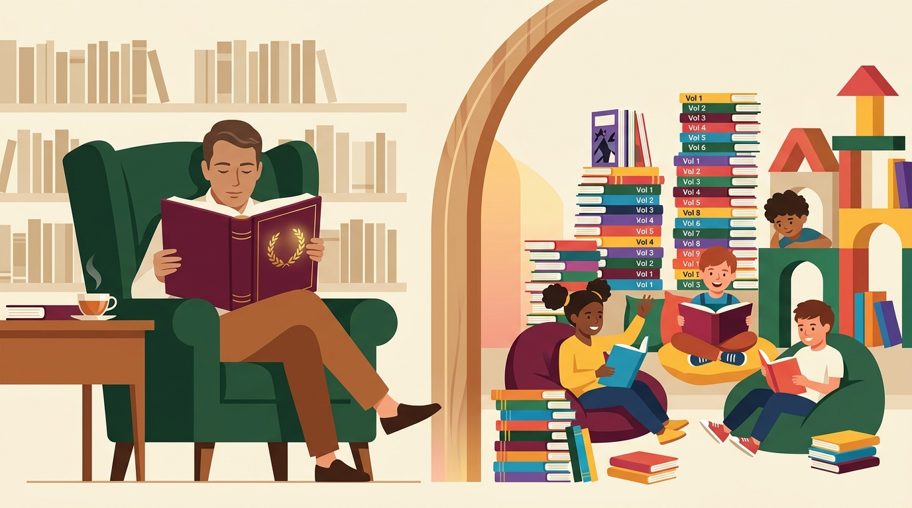

2026 대한민국 도서관
인기대출 데이터 심층 해부
2026년 1월부터 10월까지 전국 공공도서관에서 가장 많이 대출된 상위 200권,
누적 2,996,340건의 대출 기록을 전수 분석했습니다.
표면적인 순위표 이면에 숨겨진 ‘두 개의 완전히 다른 독서 생태계’와
KDC 분류의 착시 현상을 데이터 시각화로 증명합니다.
숫자로 보는 2026 인기대출 TOP 200의 구조적 분포
200위권 진입 커트라인은 11,363건으로 치열한 롱런 경쟁이 펼쳐집니다.
핵심 시사점: 왜 평균(14,982건)과 중앙값(13,825건)이 다를까?
1위 『소년이 온다』(3.5만 건), 2위 『안녕이라 그랬어』(3.1만 건) 등 1~8위 성인 소설의 폭발적 단일 대출량이 상단 피크를 형성하는 반면, 50위 이후부터는 아동 학습만화 시리즈가 1.1만~1.5만 건 대에서 촘촘한 평원을 이루기 때문입니다.
하나의 도서관, 두 개의 완전히 다른 독서 생태계
도서관 대출 시장은 작동 법칙이 정반대인 ‘성인 단행본 시장’과 ‘아동 다권본 시장’으로 양분됩니다.

권당 평균 대출 15,929건으로 개별 도서의 파급력이 가장 높음
권당 평균 대출 14,596건 · 시리즈 전권 연쇄 대출로 총량 압도
구조적 대조: ‘한 권의 깊은 몰입(성인)’ vs ‘시리즈 전권 정주행(어린이)’
성인 도서는 62권 중 『불편한 편의점 2』 단 1권을 제외한 61권(98.4%)이 독립 단행본인 반면, 아동 도서는 『긴긴밤』·『수박 수영장』 등 그림책 5권을 제외한 127권(96.2%)이 다권본 시리즈물입니다. 청소년 도서는 6권(82,129건, 2.7%)으로 이꽃님·유은실·김선미 작가의 성장소설이 자리 잡고 있습니다.
최상위 20위 서가 지형도: 1~8위 한국소설 vs 9~19위 흔한남매
곧바로 9위부터 19위까지 11개 순위는 『흔한남매』 시리즈가 벽돌처럼 줄세우기를 기록했습니다.
“자연과학 대출이 24.8%?” — KDC 주제 분류에 숨겨진 착시 해부
독자 세그먼트로 분해하면 98% 이상이 아동 학습만화라는 결정적 사실이 드러납니다.
• 성인 자연과학: 단 1권 (1.9%) — 룰루 밀러 『물고기는 존재하지 않는다』(169위)
• 성인 역사서: 단 1권 (11.1%) — 최태성 『최소한의 삼국지』(184위)
설득 포인트: KDC 코드만 보고 도서관 이용 행태를 판단하면 안 되는 이유
단순히 KDC 대분류 집계표만 보면 “자연과학 도서 대출이 전체의 1/4에 달한다”고 오판하게 됩니다. 반드시 ISBN 부가기호(독자대상)를 결합한 다차원 교차 분석을 수행해야 실제 도서관 이용자의 독서 실체를 파악할 수 있습니다.
아동 생태계 해부: 유튜브 크리에이터 IP의 독점과 창작동화의 분투
특히 『흔한남매』 단일 IP는 12개 파생 시리즈로 총 78권(40.8%)을 진입시켰습니다.
단순 코믹북을 넘어 과학·고전·방탈출·사회·역사 등 전 교과 영역으로 스핀오프하며 도서관 서가를 장악했습니다.
성인·청소년 생태계: 한국 현대문학의 르네상스와 3대 비문학 키워드
바늘구멍을 뚫고 진입한 성인 비문학 12권은 현대인의 불안과 열망을 명확히 투영합니다.
• 『돈의 속성』(102위, 13,823건) · 『저소비 생활』(143위, 12,551건)
👉 공격적 투기보다 연금 설계, 지출 통제, 돈에 대한 철학적 태도에 집중
• 『마흔에 읽는 쇼펜하우어』(113위) · 멜 로빈스 『렛뎀 이론』(149위) · 『다크 심리학』(185위)
👉 타인의 시선에 휘둘리지 않고(‘Let Them’) 내면의 주체성을 지키는 철학·심리 열풍
주목할 만한 현상: ‘이꽃님 작가(6권 진입)’와 ‘한로로 『자몽살구클럽』(20위)’
청소년 문학의 아이돌 이꽃님 작가는 『죽이고 싶은 아이 1·2』, 『세계를 건너 너에게 갈게』 등 무려 6권을 TOP 200에 올렸으며, 인디 싱어송라이터 한로로(HANRORO)의 소설 『자몽살구클럽』은 KDC 미분류 상태에서도 전체 20위(19,959건)에 오르는 기염을 토했습니다.
출판년도 시계열 분석: 성인의 신간 민감도 vs 다권본 서지 데이터의 비밀
반면 2019~2021년 구간이 53%(106권)로 치솟은 이유는 도서관 서지 DB의 등록 특성에 있습니다.
[Data Literacy] 왜 2019~2021년 출판 도서가 106권(53%)이나 될까?
데이터를 검증한 결과, 『흔한남매 1~21권』의 출판년도가 모두 2019로, 『에그박사 1~17권』이 모두 2020으로, 『깜냥 1~8권』이 모두 2020으로 기재되어 있습니다. 이는 국립중앙도서관 다권본 서지 시스템에서 시리즈 1권(초판)의 발행년도가 후속 신간 권차에도 대표 발행년도로 일괄 매핑되기 때문입니다. 이 메타데이터 특성을 이해해야 시계열 왜곡에 빠지지 않습니다!
출판사 지형도: 4대 출판사(65.6%)의 과점과 ‘다량 진입 vs 고효율 타격’
출판사마다 시리즈 물량전(미래엔)과 단행본 고타율 전략(문학동네·나무옆의자)이 뚜렷하게 갈립니다.
• 문학동네(22.0만 건): 권당 평균 18,338건으로 메이저 출판사 중 개별 도서 파괴력 1위
• 나무옆의자: 김호연 작가 3권으로 평균 18,304건 / 따끈따끈책방: 『똥볶이 할멈』 7권 진입
도서관 대출 생태계의 다양성 지표
상위 4개 출판사가 65.6%(130권)를 차지하는 과점 구조 속에서도, 1~2권의 단행본으로 진입한 독립·중소 출판사(무제, 어센틱, 복복서가, 클레이하우스 등)가 29곳에 달해 성인 문학·교양 영역에서는 출판사 규모보다 작품 자체의 입소문이 결정적임을 보여줍니다.
5대 핵심 인사이트 종합 및 TOP 200 인터랙티브 데이터 아카이브
우측 아카이브에서 200권 전체 데이터를 실시간 검색·필터링하며 질의응답에 활용할 수 있습니다.
| 순위 | 서명 (권차) | 저자 | 출판사 | 출판년 | 세그먼트 | 대출건수 |
|---|